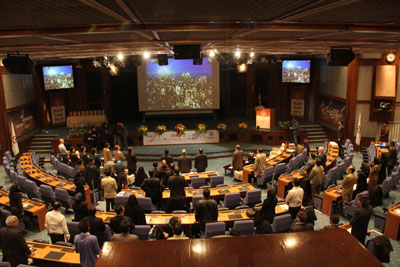

وسایل ارتباطی جدید و قابل حمل در كوچك شدن
جهان و تسریع و تسهیل ارتباط نقش اساسی داشته است. این
فناوریها به دلیل عدم وابستگی به مکان در مقایسه با سایر
فناوریهای دیجیتال توسط اقشار بیشتری از مردم در سراسر دنیا
مورد استفاده قرار میگیرد و در نتیجه تاثیر بیشتری در زندگی
اجتماعی، سبک زندگی و رفتار مصرفی ایشان به جای میگذارند.
فناوریهای همراه مهمترین فناوریهای فردی هستند كه ضمن ایجاد
خلوت مستقل فردی رابطه اجتماعی فرد را در بستر شبكههای فردی
شده معنادار كرده است.
بنابراین، فناوری همراه در عین فردی بودن عنصری كاملا
اجتماعی است و در واقع فرصت و ظرفیت مهمی را برای هر دو
عنصر فردگرایی و جامعهگرایی فراهم میآورد.

ظرفیتهای رو به توسعه فناوریهای همراه در مسیری قرار دارد
كه این صنعت ارتباطی را تبدیل به صنعت پر ظرفیت به لحاظ
كاربران كرده است. تمایل شدید نسل جوان به استفاده از
ابزارهای ارتباطی مدرن در واقع نشان دهنده موج عظیمی از
تقاضا و خواست برای حضور در جامعه اطلاعاتی است و ارتباطات
اجتماعی کاربران را افزایش داده است.
مرکز مطالعات تکنولوژی دانشگاه صنعتی شریف با هدف استفاده
از این ظرفیت و پاسخگویی به بخشی از نیازهای جامعه بزرگ
ارتباطات و همچنین در راستای رسالت خود مبنی بر آگاهسازی
آحاد جامعه در زمینه فناوریهای نوین پس از برگزاری دومین
کنفرانس خدمات ارزش افزوده تلفن همراه ایران و نخستین
جشنواره نوآوریهای تلفن همراه کشور در سال گذشته در نظر
دارد کنگره موبایل ایران را به صورت سالانه برگزار نماید.
امید است در سایه لطف حقتعالی بتوانیم با برگزاری چنین
رویدادهای تخصصی و فراهم آوردن امکان تبادل دانش و تجربیات
متخصصین حوزه فناوری اطلاعات و ارتباطات و همچنین امکان
آشنایی مردم با خدمات و فناوریهای نوین این حوزه در راستای
این مهم گام برداریم.